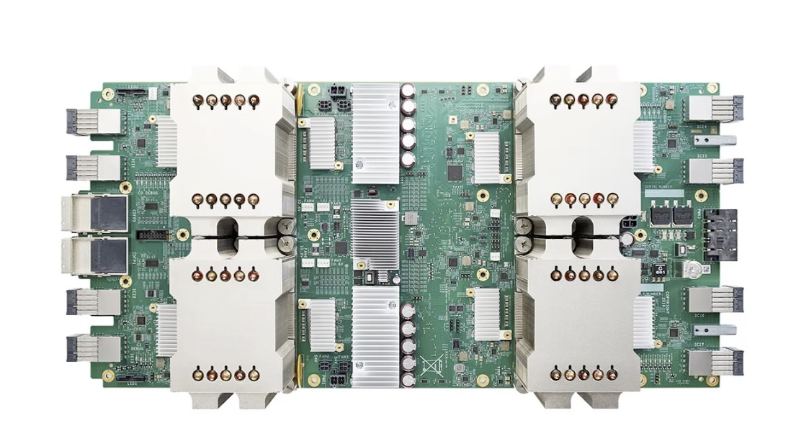

使用TPU訓練TensorFlow模型（Huan）¶

2017 年 5 月，Alpha Go 在中國烏鎮圍棋峰會上，與世界第一棋士柯潔比試，並取得了三比零全勝戰績。之後的版本 Alpha Zero 可以透過自我學習 21 天即可以達到勝過中國頂尖棋手柯潔的 Alpha Go Master 的水平。
Alpha Go 背後的動力全部由 TPU 提供。TPU 使其能夠更快地 “思考” 並在每一步之間看得更遠。
TPU 簡介¶
什麼是 TPU¶
TPU 代表 Tensor Processing Unit (張量處理器) ，是由谷歌在 2016 年 5 月發布的為機器學習而建構的定製集成電路（ASIC），並為 TensorFlow 量身定製。
早在 2015 年，谷歌大腦團隊就成立了第一個 TPU 中心，為 Google Translation，Photos 和 Gmail 等產品提供支援。 為了讓所有資料科學家和開發人員能夠使用此技術，不久之後就發布了容易使用、可擴展且功能強大的基於谷歌雲的 TPU，以便在 Google Cloud 上執行 TensorFlow 模型。
TPU 由多個計算核心（Tensor Core）組成，其中包括純量，矢量和矩陣單元（MXU）。TPU（張量處理器）與 CPU（中央處理器）和 GPU（圖形處理器）最重要的區別是：TPU 的硬體專為線性代數設計，而線性代數是深度學習的基石。在過去幾年中，Google TPU 已經發布了 v1，v2，v3, v2 Pod, v3 Pod, Edge 等多個版本：
版本 |
圖片 |
性能 |
內存 |
|---|---|---|---|
TPU (v1, 2015) |

|
92 TeraFLOPS |
8 GB HBM |
Cloud TPU (v2, 2017) |
 | 180 TeraFLOPS |
64 GB HBM |
Cloud TPU (v3, 2018) |

|
420 TeraFLOPS |
128 GB HBM |
Cloud TPU Pod (v2, 2017) |

|
11,500 TeraFLOPS |
4,096 GB HBM |
Cloud TPU Pod (v3, 2018) |

|
100,000+ TeraFLOPS |
32,768 GB HBM |
Edge TPU (Coral, 2019) |

|
4 TeraFLOPS |
- 註：
1. Tera: 萬億，10的12次方 1. Peta: 千萬億，10的15次方 1. FLOPS：每秒浮點數計算次數（FLoating-point Operations Per Second） 1. OPS: 每秒位整數計算次數（Integer Operations Per Second）
基於 Google Cloud，TPU 可以方便的進行建立和使用。同時，Google 也推出了專門為邊緣計算環境而部署的 Edge TPU。Edge TPU 尺寸小，功耗低，性能高，可以在邊緣計算環境中廣泛部署高質量的 AI。其作為 Cloud TPU 的補充，可以大大促進 AI 的解決方案在 IoT 環境中的部署。
爲什麼使用 TPU¶
透過使用 Cloud TPU ，我們可以大大提升 TensorFlow 進行機器學習訓練和預測的性能，並能夠靈活的幫助研究人員，開發人員和企業 TensorFlow 計算群集。

根據 Google 提供的資料顯示，在 Google Cloud TPU Pod 上可以僅用 8 分鍾就能夠完成 ResNet-50 模型的訓練。
TPU |
TPU Pod |
|
|---|---|---|
訓練速度（每秒圖像數） |
4000+ |
200,000+ |
最終精度 |
93% |
93% |
訓練時長 |
7h 47m |
8m 45s |
Source: Google
TPU 性能¶
根據研究顯示，TPU 比現代 GPU 和 CPU 快 15 到 30 倍。同時，TPU 還實現了比傳統晶片更好的功耗效率，算力功耗比值提高了 30 倍至 80 倍。
CPU |
10 |
GPU |
10,000 |
TPU |
100,000 |
Source: An in-depth look at Google’s first Tensor Processing Unit (TPU)
TPU 環境配置¶
免費 TPU：Google Colab¶
最方便使用 TPU 的方法，就是使用 Google 的 Colab ，不但可以透過瀏覽器直接使用，而且還免費。
在 Google Colab 的 Notebook 界面中，打開界面中，打開主目錄 Runtime ，然後選擇 Change runtime type，會彈出 Notebook settings 的窗口。選擇裡面的 Hardware accelerator 為 TPU 就可以了。
為了確認 Colab Notebook 中的確分配了 TPU 資源，我們可以執行以下測試程式碼。如果輸出 ERROR 資訊，則表示目前的 Runetime 並沒有分配到 TPU；如果輸出 TPU 位置及設備列表，則表示 Colab 已經分配了 TPU。
import os
import pprint
import tensorflow as tf
if 'COLAB_TPU_ADDR' not in os.environ:
print('ERROR: Not connected to a TPU runtime')
else:
tpu_address = 'grpc://' + os.environ['COLAB_TPU_ADDR']
print ('TPU address is', tpu_address)
輸出資訊：
TPU address is grpc://10.49.237.2:8470
看到以上資訊（TPU grpc address），即可以確認 Colab 的 TPU 環境設置正常。
Cloud TPU¶
在 Google Cloud 上，我們可以購買所需的 TPU 資源，按照需求進行機器學習訓練。為了使用 Cloud TPU ，需要在 Google Cloud Engine 中啟動 VM 並為 VM 請求 Cloud TPU 資源。請求完成後，VM 就可以直接使用分配給它專屬的 Cloud TPU 了。

> Source: TPUs for Developers
在使用 Cloud TPU 時，為了免除繁瑣的驅動安裝，我們可以透過直接使用 Google Cloud 提供的 VM 操作系統鏡像。 TPU 基礎使用 ^^^^^^^^^^^^^^^^^^^^^^^^^^^^^^^^^^^^^^^^^^^^
在 TPU 上進行 TensorFlow 分散式訓練的核心 API 是 tf.distribute.TPUStrategy ，可以用簡單幾行程式碼就實作出 TPU 上的分散式訓練，同時也可以很容易的遷移到 GPU 單機多卡、多機多卡的環境。以下是如何實例化 TPUStrategy ：
tpu = tf.distribute.cluster_resolver.TPUClusterResolver()
tf.config.experimental_connect_to_cluster(tpu)
tf.tpu.experimental.initialize_tpu_system(tpu)
strategy = tf.distribute.experimental.TPUStrategy(tpu)
在上面的程式碼中，首先我們實例化 TPUClusterResolver；然後，我們連接 TPU Cluster，並對其進行初始化；最後，完成實例化 TPUStrategy。
以下使用 Fashion MNIST 分類任務展示 TPU 的使用方式。本小節的程式碼可以在 https://github.com/huan/tensorflow-handbook-tpu 找到。
更方便的是在 Google Colab 上直接打開本例子的 Jupyter 直接執行，網址：https://colab.research.google.com/github/huan/tensorflow-handbook-tpu/blob/master/tensorflow-handbook-tpu-example.ipynb （推薦）
import tensorflow as tf
import numpy as np
import os
(x_train, y_train), (x_test, y_test) = tf.keras.datasets.fashion_mnist.load_data()
# add empty color dimension
x_train = np.expand_dims(x_train, -1)
x_test = np.expand_dims(x_test, -1)
def create_model():
model = tf.keras.models.Sequential()
model.add(tf.keras.layers.Conv2D(64, (3, 3), input_shape=x_train.shape[1:]))
model.add(tf.keras.layers.MaxPooling2D(pool_size=(2, 2), strides=(2,2)))
model.add(tf.keras.layers.Activation('relu'))
model.add(tf.keras.layers.Flatten())
model.add(tf.keras.layers.Dense(10))
model.add(tf.keras.layers.Activation('softmax'))
return model
tpu = tf.distribute.cluster_resolver.TPUClusterResolver()
tf.config.experimental_connect_to_cluster(tpu)
tf.tpu.experimental.initialize_tpu_system(tpu)
strategy = tf.distribute.experimental.TPUStrategy(tpu)
with strategy.scope():
model = create_model()
model.compile(
optimizer=tf.keras.optimizers.Adam(learning_rate=1e-3),
loss=tf.keras.losses.sparse_categorical_crossentropy,
metrics=[tf.keras.metrics.sparse_categorical_accuracy])
model.fit(
x_train.astype(np.float32), y_train.astype(np.float32),
epochs=5,
steps_per_epoch=60,
validation_data=(x_test.astype(np.float32), y_test.astype(np.float32)),
validation_freq=5
)
以上程式執行輸出為：
Epoch 1/5
60/60 [==========] - 1s 23ms/step - loss: 12.7235 - accuracy: 0.7156
Epoch 2/5
60/60 [==========] - 1s 11ms/step - loss: 0.7600 - accuracy: 0.8598
Epoch 3/5
60/60 [==========] - 1s 11ms/step - loss: 0.4443 - accuracy: 0.8830
Epoch 4/5
60/60 [==========] - 1s 11ms/step - loss: 0.3401 - accuracy: 0.8972
Epoch 5/5
60/60 [==========] - 4s 60ms/step - loss: 0.2867 - accuracy: 0.9072
10/10 [==========] - 2s 158ms/step
10/10 [==========] - 2s 158ms/step
val_loss: 0.3893 - val_sparse_categorical_accuracy: 0.8848